是有界的，则存在一个数c，使得
是有界的，则存在一个数c，使得现在我们来讨论其他类型的几何对称性。即使在讨论左右对称性的时候，我也忍不住偶尔讨论一下其他对称性，比如柱对称性和球对称性。我们最好先给出一些基本概念的精确定义，这需要一些数学知识，希望读者能耐心阅读。前面已经谈到过变换。空间映射S把空间中每一点p与它的像pʹ对应起来。恒等映射I是这种映射的一个特例，它将每一点p映射为自身。给定两个映射S、T，可以先进行其中一个再进行另一个：如果S将p映射为pʹ，T再将pʹ映射为pʹʹ，那么复合映射则将p映射为p'ʹ，记该映射为ST。映射S可能有一个逆映射Sʹ，使得SSʹ=I且SʹS=I。换言之，如果S将p映射为pʹ，那么Sʹ则将pʹ映射为p；先进行Sʹ映射操作再进行S映射操作会有类似的效果。在第一讲中我称这种一对一的映射S为变换；现在我们把相反的变换标记为S-1。当然，恒等映射I也是一个变换，且它是自己的逆变换。作为左右对称性的基本操作，平面反射的迭代SS会得到恒等映射。换言之，平面反射是其自身的逆映射。一般来说，映射的组合是不满足交换律的，ST与TS并不一定相同。比如，取平面上一点o，令S为水平平移映射，它将o平移至o1；而映射T表示绕o点旋转90°，那么ST就把o变换至o2（图19），但TS却将o变换至o1。如果S具有逆变换S-1，那么变换S-1的逆变换为S。两个变换的组合ST仍是变换，且（ST）-1等于T-1S-1（注意这里的次序！）。你们都很熟悉这一规则，虽然可能并不熟悉它的数学表达式。穿衣服时，顺序并非无关紧要，总是先穿衬衣后穿外套；而脱衣时顺序正好相反：先脱外套后脱衬衣。
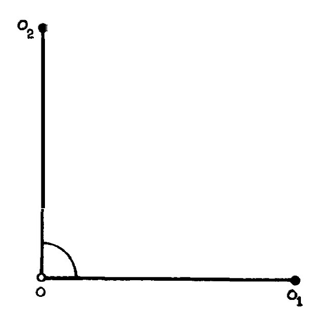
图19
我还讲过一类特殊的空间变换，即几何学家所谓的相似（变换）。但是我更喜欢把它们称为自同构，并采用莱布尼茨的定义——保持空间结构不变的变换。就目前的讨论来说，何种空间结构并不重要。从自同构的定义来看，显然恒等变换I就是一个自同构，而且如果S是自同构，则其逆变换S-1也是自同构。另外，两个自同构S、T的复合映射ST仍是自同构。将上述几点换个说法：（1）每个图形都与自身相似；（2）如果图形Fʹ相似于图形F，则F也相似于Fʹ；（3）如果F相似于Fʹ，且Fʹ相似于F″，则有F相似于F″。数学家们用“群”这个词来描述这种情况：自同构构成一个群。变换的任何总体，即变换的任何集合Γ只要满足下列条件就构成一个群：（1）恒等变换I属于Γ；（2）如果变换S属于Γ，则其逆变换S-1也属于Γ；（3）如果变换S和T都属于Γ，则其复合变换ST也属于Γ。
有一种通过全等（congruence）的概念来描述空间结构的方法，牛顿和亥姆霍兹都很喜欢。比如同一刚体在不同位置时所占据的两部分空间V和Vʹ，就是空间的两个全等部分。如果将此刚体从某位置移动到另一位置，则刚体中占据V中点p处的粒子将占据Vʹ中的点pʹ，因此移动的结果就是建立了从V到Vʹ的映射p→pʹ。我们可以真实地，也可以在想象中扩展该刚体，从而占据空间中任一给定点p，这样，全等映射p→pʹ便可扩展至整个空间。任何这种全等变换（congruent transformation）——可以证明，它有逆变换pʹ→p，所以我才称之为变换一一都是相似变换或自同构；从它们各自的概念可以很容易看出这一点。而且，可以证明，全等变换构成一个群，自同构群的一个子群。更详细的讨论如下：相似变换中存在一类并不改变物体尺寸大小的变换；现在就称这些变换为全等。全等可能是真的（proper），即将左螺旋变换为左螺旋，右螺旋变换为右螺旋；也可能是非真的（improper）或反射的（reflexive），即将左螺旋变为右螺旋，将右螺旋变为左螺旋。真全等就是刚才我们所说的将移动前后刚体上各点的位置关联起来的全等变换。出于简便，我们现在称之为（几何意义上而非运动学意义上的）移动，并称非真全等为反射。这里沿用了一个最重要例子的叫法：平面反射，即物体变换为自身的镜像。于是我们就有了下述序列：相似→全等=尺寸大小不变的相似→移动=真全等。全等构成了相似的一个子群，移动又构成了全等的一个指数为2的子群。“指数为2”的意义如下：如果B是任意非真全等，则将B与所有可能的真全等S组合成复合全等BS，便得到了所有的非真全等；因此整个全等群一分为二：前一半为真全等，后一半为非真全等。但只有前一半构成一个群；因为两个非真全等A、B的复合AB是真全等。
保持O点固定不变的全等可称为绕O点的旋转；进而有真旋转和非真旋转。绕给定中心O的所有旋转构成一个群。最简单的全等是平移。平移可以用向量
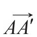
表示，因为如果平移将点A移动至Aʹ，将点B移动至Bʹ（图20），则BBʹ与AAʹ具有相同的方向和长度，换句话说，向量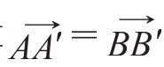
。[12]所有的平移构成一个群；事实上相继进行的两个平移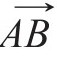
和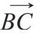
得到平移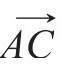
。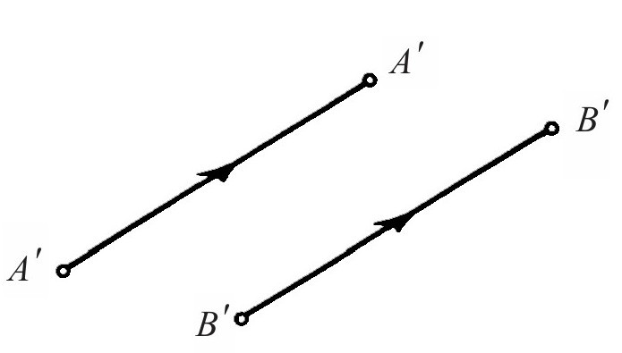
图20
所有这些与对称性有什么关系呢？它们提供了定义对称性所需要的数学语言。对于给定的空间构型来说，保持
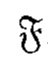
不变的空间自同构构成了一个群Γ，而且该群精确地描述了所拥有的对称性。空间本身具有对应于所有自同构、所有相似构成的群的全部对称性。空间中任意图形的对称性由该群的一个子群来描述。现在来举例说明。图21是浮士德博士用来诅咒魔鬼靡菲斯特的著名的五角星形。在五个绕中心O的真旋转（每个旋转的角度为360°/5的整数倍，包括全等变换）的作用下，以及在沿中心O与各顶点的连线进行的反射变换的作用下，该五角星均保持不变。这十个操作构成了一个群，并且告诉了我们五角星形所具有的对称性。因此，用任何自同构群来替代平面上的反射，才能把左右对称性自然地泛化至这种更广泛几何意义上的对称性。平面上圆心为O的圆具有由所有平面旋转构成的群所描述的对称性，空间中球心为O的球具有由所有空间旋转构成的群所描述的对称性。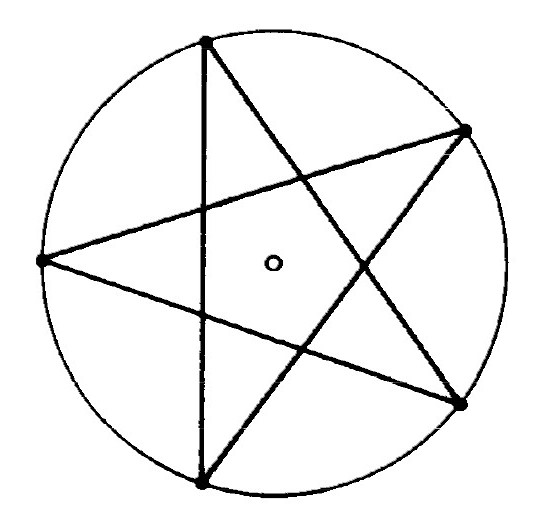
图21
如果图形并不延伸至无穷远，则保持该图像不变的自同构必须保持尺寸不变，所以是一个全等，除非该图形仅由一个点构成。简单证明如下：如果某自同构保持图形不变，却改变图形的尺寸，则该自同构或它的逆变换应使所有的一维尺寸以某个比例a增大（而非减小），这里a＞1。该自同构记为S，并设α、β是图形上两个不同的点，二者相距d＞0。对变换S进行迭代，有：
S=S1，SS=S2，SSS=S3，……
n次迭代后的变换Sn将α、β变换为图形中的两个点αn、βn，后两者之间的距离为d·an。随着幂指数n的增大，该距离趋向于无限大。但是，如果图形是有界的，则存在一个数c，使得
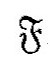
中任意两点间距都不大于c。所以，当n大到d·an＞c时，就出现矛盾了。这一论证还证明了：任意自同构的有限群均只由全等构成。这是因为，如果它包含一个以比率a＞1放大一维尺寸的变换S，则该群中无限多个迭代S1，S2，S3，……都不相同，因为它们放大的比例a，a2，a3，……都不一样。基于这些原因，我们应当只考虑由全等构成的群——尽管我们还要讨论像饰带之类实无限或潜无限的构型。在作了这些数学铺垫之后，现在我们来讨论几个在艺术领域或自然界中具有重要意义的特殊对称群。那个定义了左右对称性、镜像反射的操作，本质上是个一维操作。直线可以为位于其上的任意点O所反射，该反射将点P变换为位于O点另一侧且到O点距离与之相等的点Pʹ。这样的反射是一维直线仅有的非真全等，而平移是其仅有的真全等。相对于O点进行反射之后再进行平移操作OA，则得到相对于线段OA的中点A1的反射。饰带艺术中存在一种“无限和谐”，即图案按照一定的空间规律重复，这可以用在平移t下保持不变的图形来说明。在平移t下保持不变的型式，在迭代平移t1、t2、t3……下也保持不变，更不用说恒等平移t0=I了；在平移t的逆变换t-1及其迭代t-1、t-2、t-3……下也保持不变。如果直线在t的作用下移动了a，则在tn作用下的移动量为：
na（n=0，±1，±2，……）
所以，如果我们用所产生的移动a来表征平移t，相应地就应该用na来表征t的迭代或幂tn。从这一意义上来说，将直线上的无限和谐型式仍变换为其自身的所有平移，是基本平移a的整数倍na。这种规律重复也可以与反射对称性结合起来。果真这样做的话，则所有平移的一半，即a/2处均为反射的中心。对于一维型式或饰带来说，只可能存在如图22所示的这两种对称性（其中叉号“×”表示反射的中心）。
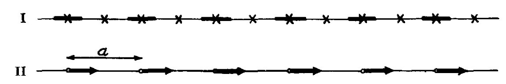
图22
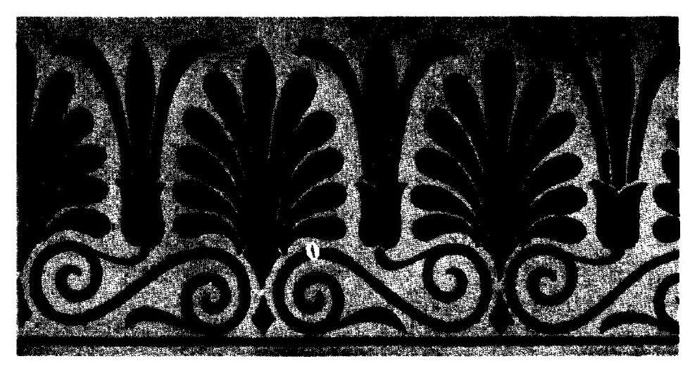
图23
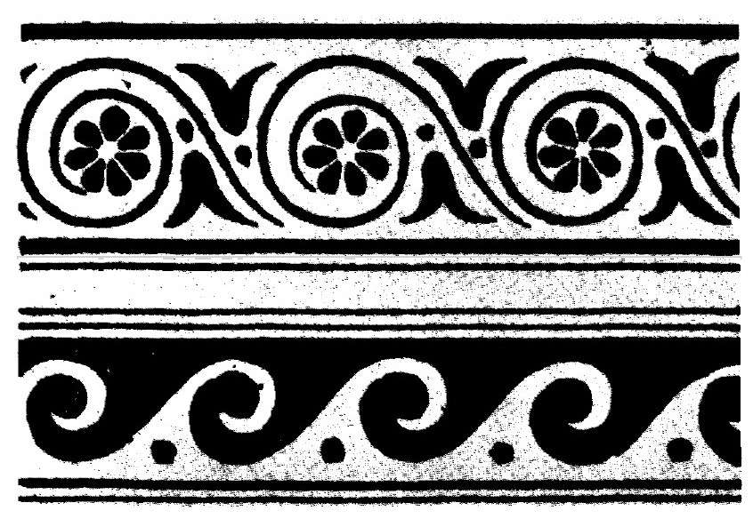
图24
当然，真实的饰带并不是严格一维的，但是它们的对称性（就我们描述过的而言）至今只用到了它们长度方向上的维度。这里有一些古希腊艺术的简例，第一幅图（图23）是一种很常见的图形——棕榈叶，它属于Ⅰ类（平移+反射）；第二幅图（图24）不存在反射对称性（Ⅱ类）；图25是位于苏萨城的大流士王宫中的弓箭手雕像，属纯粹的平移对称，饰有属于纯粹平移的波斯弓箭手的图案，不过应该注意到的是，基本的平移单元为相邻弓箭手间距的两倍，因为弓箭手的服饰是交替变换的。
我们再来看一下蒙雷阿莱大教堂中的《耶酥升天图》（图10），不过这次要注意的是它周边的带状装饰图案。其中最宽的一条，仅仅通过树状图案外轮廓的重复来体现平移对称性，但每个树状轮廓均填充了不同的二维对称图案，后来考斯莫迪（Cosmati）也采用了这一特殊技法。威尼斯的道奇宫（图26）可以说是建筑学中平移对称性的代表。类似的例子数不胜数。
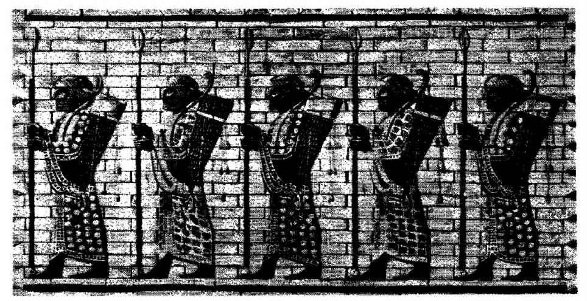
图25
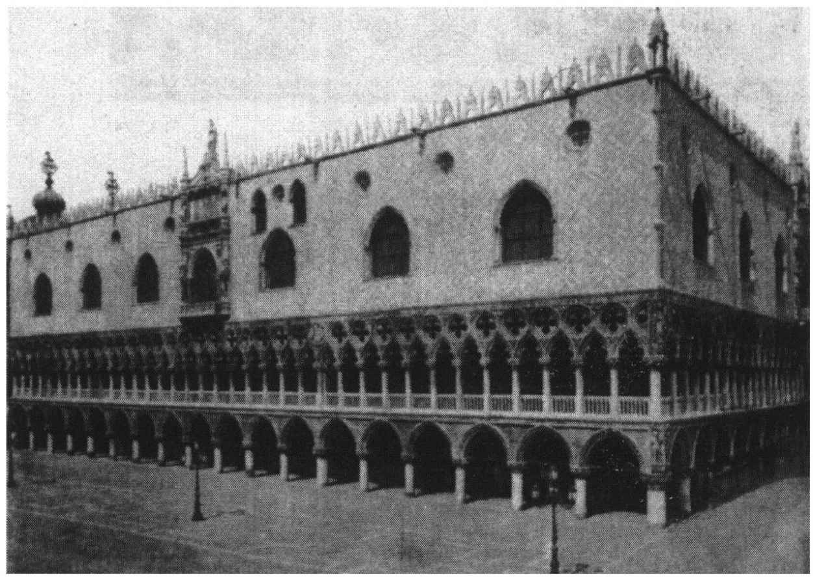
图26
如前所述，饰带图案实际上是沿中心线分布的二维带状图案，还存在横向上的另一维度，所以还可能存在更多的对称性。图案可能在沿中心线l的反射下保持不变；我们称之为纵线反射，以区别于沿垂直于l的直线进行的横线反射，或者说图案在纵线反射外加a/2的平移变换作用下保持不变（纵线平移反射）。饰带中常见的元素是线、弦或某种形式的辫状物，即一条线在空间中交织穿插另一条线（因此有一部分不可见）。接受了上述解释，就可以作进一步的操作，比如，饰带沿某个面的反射会把位于该面上方的线变换至面的下方。所有这些均可像本书前言中提到的施派泽所著的《有限阶群论》中某一节那样，用群论来作透彻的分析。
在有机界，左右对称性往往比较规则，平移对称性的规则程度则差很多。生物学家称生物的平移对称性为分节现象。枫树的芽枝和二列安格兰（Angraecum distichum，图27）的芽枝可做参考。[13]对于二列安格兰的芽枝来说，平移与纵线平移反射并存。当然分节并不会无限延展下去（饰带的对称形式也不会），但我们可以说有可能在一个方向上趋于无穷，因为随着时间的推移，新芽长出后会形成新的枝节。歌德曾说过，脊椎动物的尾巴暗示着生物体具有潜无限性。图28所示的蜈蚣的中心部分具有相当规则的平移对称性，并伴有左右对称性，两种对称性的基本操作分别为单节平移和纵线反射。
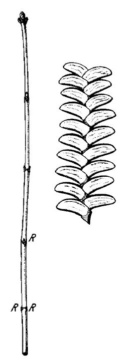
图27
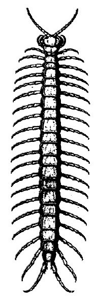
图28
在一维时间上等间隔的重复就产生了音乐的节拍。也可以说，芽枝的生长把缓慢的时间节拍转化成了空间节律。反射，即时间上的反演，在音乐中所起的作用远小于节拍。如果把音乐逆序演奏，其风格将大大改变；而且，我这个音乐菜鸟很难识别出赋格曲中所用的反射；显然，反射产生不了节拍那种自然的效果。所有的音乐家都认为，音乐的情感基础产生于严格的规则要素。或许可以对它做某种数学处理，就像对装饰艺术的成功应用那样。不过，我们可能还没有发展出合适的数学工具。这并不奇怪；毕竟古埃及人对装饰艺术的熟练运用，比数学家发现群概念中适于处理该艺术（并推导出可能的对称类）的数学工具早了四十年。对装饰艺术的群理论很感兴趣的施派泽，也试图把数学上的组合原理应用到音乐的形式问题上来。他的书中就有一章题为《数学思维方式》[14]，其中就分析了贝多芬的《钢琴奏鸣曲》（作品28号），还提到了阿尔弗雷德·洛伦兹（Alfred Lorenz）对理查德·瓦格纳（Richard Wagner）的主要作品格式结构的研究。诗歌的韵律也密切相关，且如施派泽所说，这方面的科学研究更为深入。音乐和诗歌韵律似乎有一个共同原则，即通常被称为小节的结构形式aab：a为重复的主体，然后是“尾节”b；古希腊诗歌中先是左舞诗、右舞诗，然后是抒情诗。但这种结构形式难以归为对称性。[15]
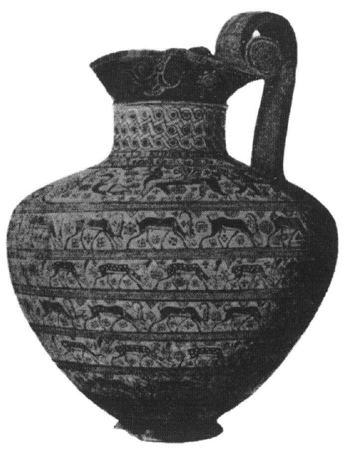
图29
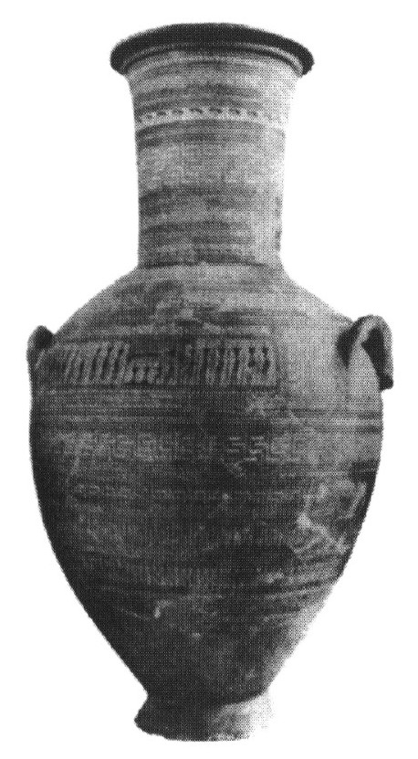
图30
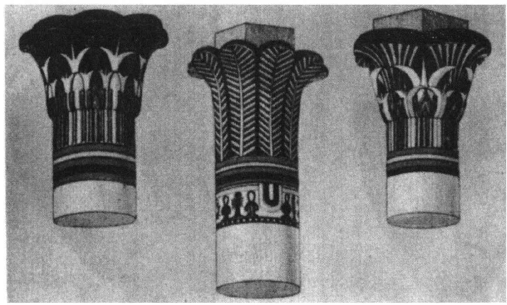
图31
现在回过头来考虑空间中的对称。取一条由长度为a的图案不断接续构成的饰带，把它绕在一个周长为a的整数倍（比如说25a）的圆柱面上，这样得到的图案绕圆柱的轴转动α=360°/25或其整数倍后保持不变。接连转25次后转动的总角度为360°，或者说是恒等旋转。于是我们就得到了一个25阶有限旋转群，即由25个操作构成的群。圆柱可以用任何具有柱对称性的面，亦即在绕某一根轴的所有旋转下均保持不变的面（譬如说花瓶的表面）来代替。图29是一只几何时期[16]的雅典式花瓶，展示了多种这类简单装饰图案。图30是一个公元前7世纪爱奥尼亚派的罗德式水罐，虽然其风格已不再是几何式的了，但其对称原则还是一样的。图31所示的柱顶实例也同样来自古埃及。绕平面上一点O或绕空间中一轴的真旋转所构成的任意有限群，均包含一个基本旋转t，它转过的角度是完整旋转360°的整除部分360°/n，且该群由这一基本旋转的迭代t1，t2，……tn-1，tn=I组成。阶数n完全表征了该群。这一结果可由下述事实类比得出：直线的任意平移群均由单个平移a的迭代va组成（v=0，±1，±2，……），只要除恒等平移之外该群并不包含能任意接近于恒等的平移。
内部建筑装饰我们可以参考巴尔多博物馆的木制圆顶（图32）；这座博物馆过去曾是突尼斯大公们的宫殿。下一幅图（图33）把我们带往比萨市中心一座顶上立有小小的施洗者约翰雕像的洗礼堂，从图上可以看出，洗礼堂外面有6条对称阶数n不同的旋转对称装饰带。加上比萨斜塔你会理解得更透彻；比萨斜塔有六层柱廊，它们具有相同阶数的旋转对称性。再回到圆顶本身，其中殿外面饰有具有平移对称性的柱子和雕带，而圆顶上面的塔则围有具备高阶旋转对称性的柱廊。
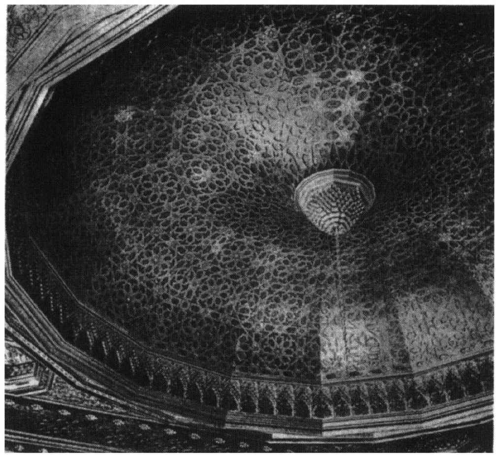
图32
站在德国美因茨罗马式教堂唱诗班的背后看到的场景（图34），却给我们一种迥然不同的感受。尽管雕带上的圆拱存在着重复，小圆花饰存在着八等分中心对称性（n=8，低于比萨洗礼堂数条装饰带的旋转对称阶数），而且塔还是3座，但左右对称性支配着整座建筑以及几乎所有的细节。
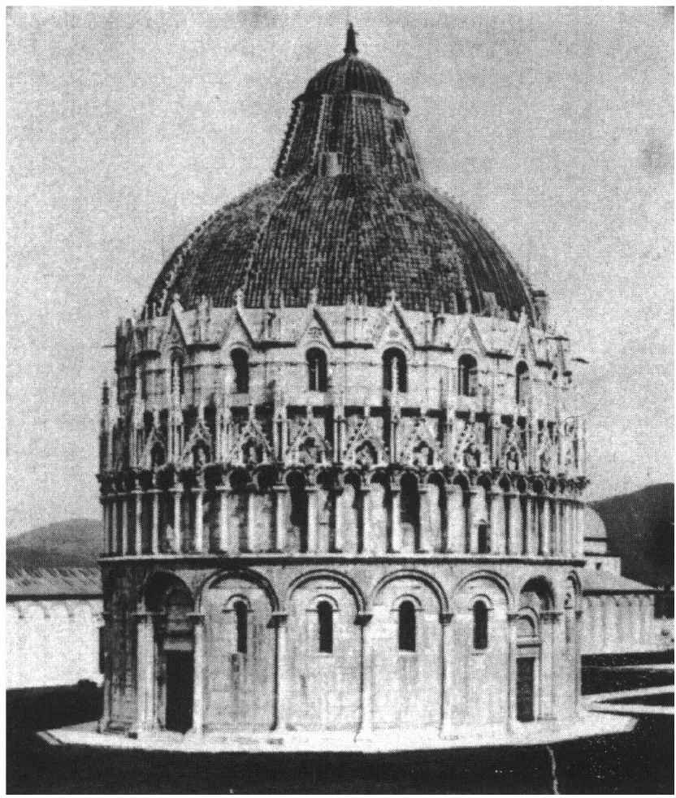
图33
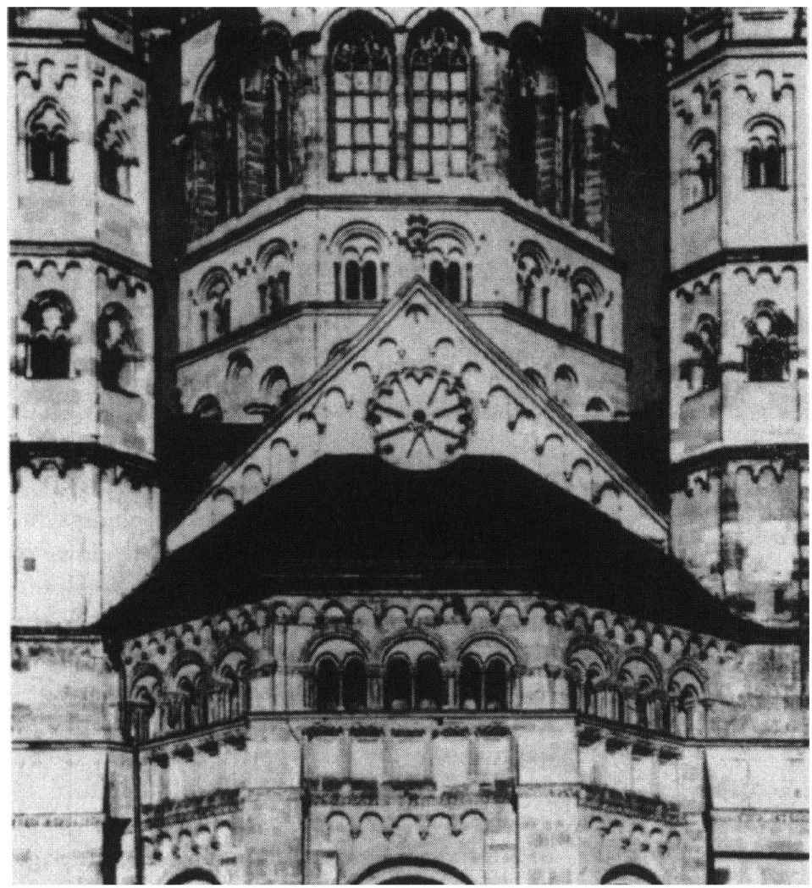
图34
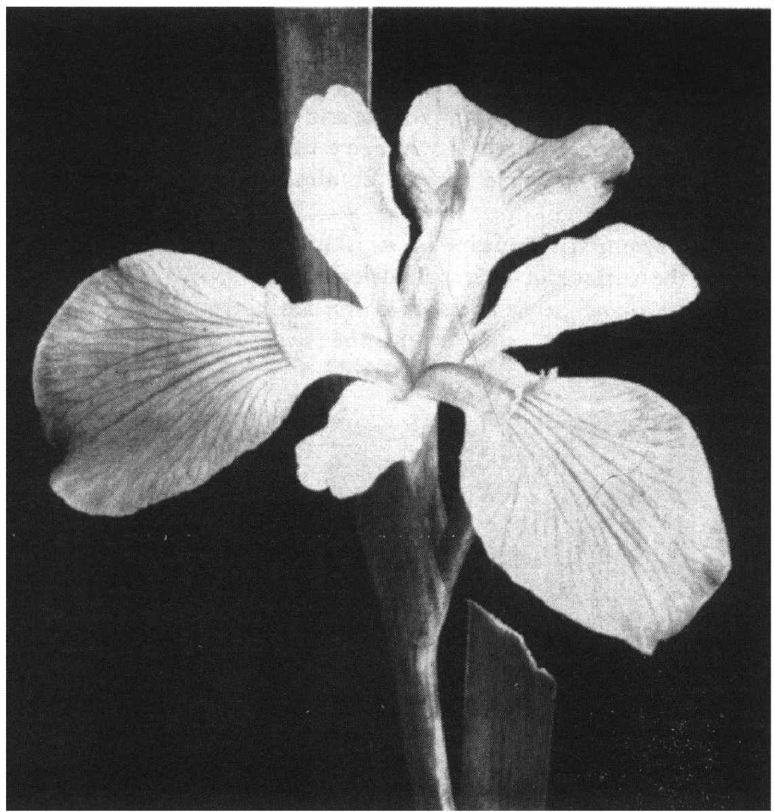
图35
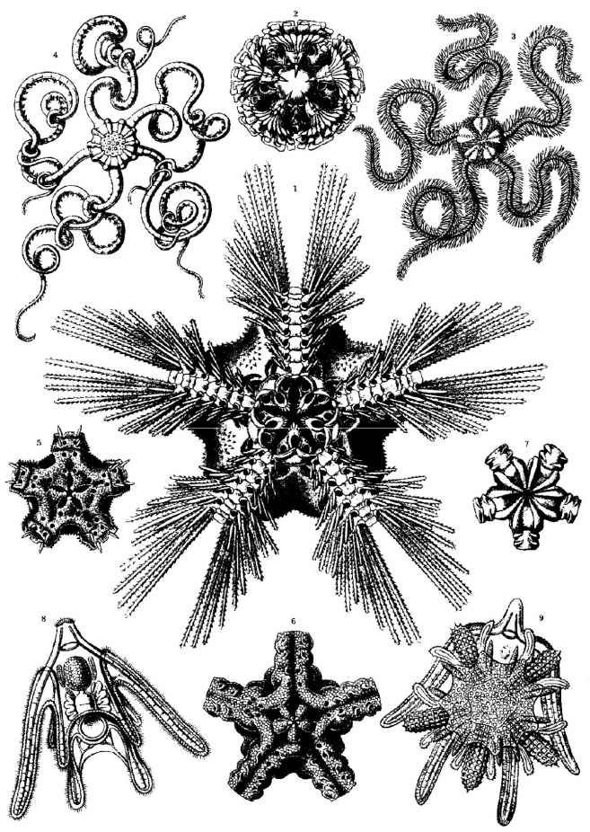
图36
如果具有完全柱对称性的表面是垂直于对称轴的平面，就会具有最简单的循环对称性（cyclic symmetry）。这样我们就只需要研究这个具有中心O的二维平面。哥特式教堂里装有色彩斑斓的玻璃的大量圆花窗，就是具有这种中心平面对称性（central plane symmetry）的典型。印象中法国特鲁瓦市的圣皮埃尔教堂的圆花窗数量最多，它们都具有3的整数倍等分对称性。
花——大自然最优雅的孩子，也具有缤纷的色彩和循环对称性。图35是具有三等分对称性的鸢尾花。在花的世界里，五等分对称性最为常见。恩斯特·海克尔的《自然的艺术形态》中的这一页（图36）似乎表明，低等动物中也存在五等分对称性，且并不鲜见。但生物学家告诫我说，这些蛇尾纲（Ophiodea）棘皮动物（echinoderm）的外表具有一定的欺骗性；它们的幼体遵循的是左右对称性。对于同样出于该书的下一幅图（图37）则没有这样的异议；这是一只具有八等分对称性的圆盘水母（Discomedusa）。因为腔肠动物处于循环对称阶段，还没有进化到左右对称阶段。海克尔这部非凡之作确实是关于自然界中对称性的一部经典，书中大量细致入微的图片展示了他在有机体形态方面所做的工作。对于生物学家海克尔来说，同样具有启发意义的还有他的《挑战者号专著》（Challenger Monograph）一书中收录的成千上万张图片。在这部专著中他首次描述了在1887年“挑战者号”探险中发现的3508种放射虫新物种。相较于这位热切的达尔文进化论追随者所热衷的通常充满臆测成分的系统发育学说，以及相当浅陋的一元论唯物主义哲学（在19～20世纪之交的德国曾非常流行），我们更应该记住的是他所取得的这些成就。
说到水母，我忍不住要引用达西·温特沃斯·汤姆逊的经典著作《论生长与体形》中的几句话；这是英国文学中的一本名著，糅合了作者深厚的几何学、物理学和生物学功底，及其渊博的古典文化学识和非凡的科学洞察力。汤姆逊介绍了用悬滴实验来模拟水母的形成：
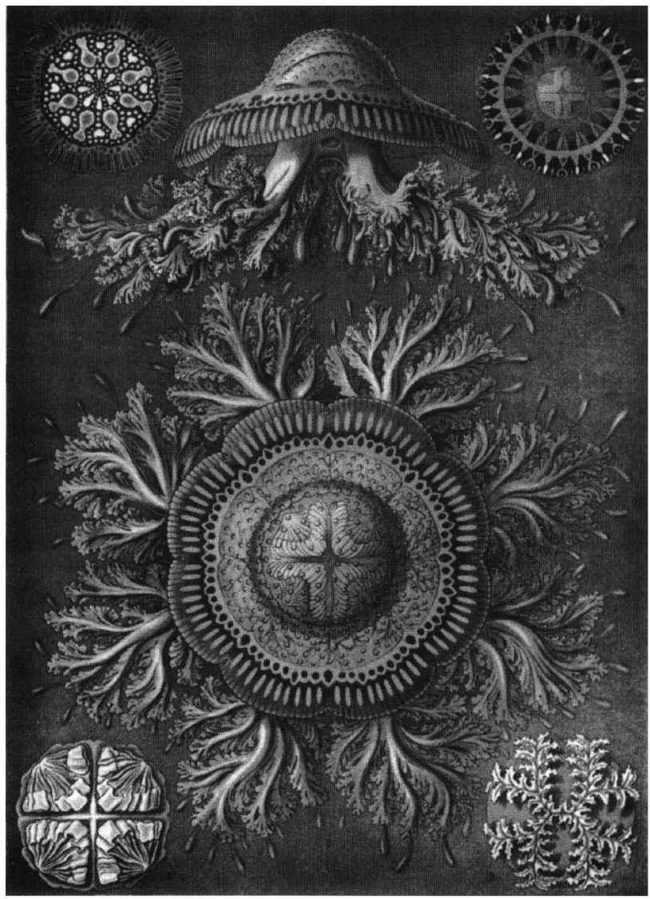
图37
虽然在有机界中五角对称性很常见，在无机界具有最完美对称性的晶体中却找不到这种对称性。除了2、3、4和6这四种阶数，不可能存在其他阶数的旋转对称性。雪花是最常见的六角对称性晶体。图38展示了部分这种固态水小奇迹。年轻时，每当圣诞期间雪花从天而降覆盖大地，总能给老老少少带来欢乐。现在只有滑雪的人才喜欢它；对于有车一族来说，雪花已成了一种烦恼。如果熟悉英国文学，你应该会记得托马斯·布朗爵士（Sir Thomas Browne）在《居鲁士的花园》（Garden of Cyrus，1658）一书中对六角对称和“五点梅花”对称所作的独特评价：“确实简单利落地表明了大自然如何通过形状来保持万物中的秩序”。熟悉德国文学的读者会想起托马斯·曼（Thomas Mann）在《魔山》（Magic Mountain）[17]一书中如何描述暴风雪的“六出伤害”：筋疲力尽的主人公汉斯·卡斯托普（Hans Castorp）靠着谷仓昏然入睡，做着关于死和爱的幻梦，暴风雪几乎要了他的命。就在一个小时前，汉斯踩着滑雪板出发进行这趟没谱的探险时，他还享受着这雪花的飞舞，“在这无数迷人的小星星中，在它们细微得人类肉眼无从发现的美妙之中，没有一片雪花与另一片相同；一种无穷尽的创造力支配着同一种基本结构——等边等角六边形——的形成和令人难以置信的千变万化。然而每一个个体都是完全对称的，形态上完全规则——每一个都具有这种神秘的、反有机、逆生命的特征。它们太过规则，任何适于生命的物质都达不到这种程度的规则性——生命的根基在这种绝对精确面前瑟瑟发抖，因为感受到了它的致命，发现它就是死亡之本——此刻汉斯·卡斯托普懂得了古代建筑师为何要在柱状结构的完全对称中有目的地、偷偷地加入一些细微的变化。”[18]
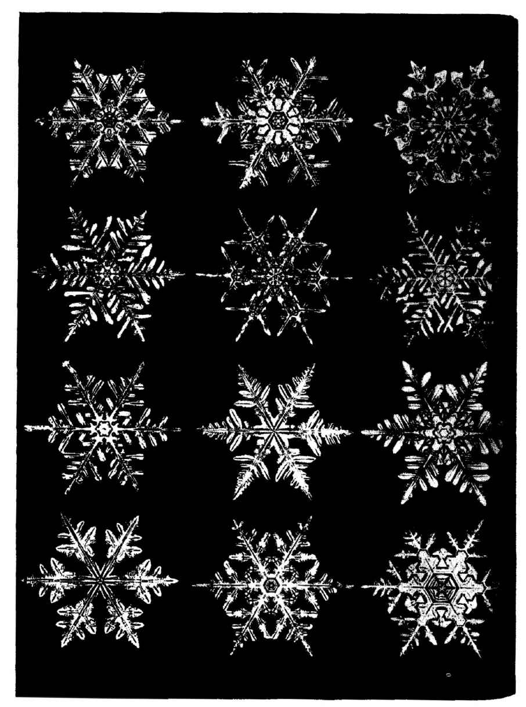
图38
至此，我们只考虑了真旋转。如果也考虑非真旋转，对于平面几何中绕中心O的旋转来说，就存在下面两种可能的有限群（分别对应于前述两种直线装饰对称性）：（1）由旋转角度为360°的整数分之一α=360°/n的单个真旋转的重复构成的群；（2）这些旋转和相对于与之相差α/2的直线进行的反射的复合构成的群。我们称第一个群为循环群Cn，第二个群为二面体群Dn。所以在二维情况下，可能存在的中心对称为：
C1，C2，C3，……；
D1，D2，D3，……
（1）
C1意味着不存在对称性，D1意味着只存在左右对称性。建筑中盛行的是4阶对称性，塔状建筑常常具有六角对称性，但具有6阶对称性的主建筑物就少多了。中世纪以来的第一座纯粹的主建筑物是佛罗伦萨的圣天使玛利亚大教堂（S.Maria degli Angeli，始建于1434年），呈对称八边形。对称五边形建筑非常罕见。1937年我在维也纳讲解对称性时曾说过，我只知道一座五边形建筑，而且还很不显眼，这就是从威尼斯穆拉诺岛上的圣米歇尔教堂（San Michele di Murano）到六边形的埃米利亚纳教堂（Capella Emiliana）之间的走廊。当然，现在华盛顿有了五角大楼，它的规模和独特的外形为轰炸机提供了一个醒目的地标。达芬奇曾系统地研究过主建筑物可能存在的对称性，以及如何在不破坏该对称性的情况下为其附上小教堂和壁龛。用抽象的现代术语来说，达芬奇的成果本质上就是上述可能的二维旋转有限群（真或非真）。
至此我们考察过的平面旋转对称总伴随着反射对称；我已经向大家介绍了不少二面体群Dn，但更简单的循环群Cn的例子还不曾举过。这并非故意。图39是两朵花，天竺葵（Geranium，Ⅰ）有对称群D5，草本蔓长春花（Vinca herbacea，Ⅱ）有更严格的群C5，因为它的花瓣不对称。图40展示的或许是最简单的旋转对称图形——三臂架（n=3）。想去除同时出现的反射对称性的话，只需给所有的臂都加上小标记即可，这样就得到了三边万字饰——一种古老的巫术符号。比如，古希腊人就在它的中心加上美杜莎头像作为呈三角形的西西里岛的标志。[数学家对它很熟悉，因为它是《巴勒摩数学会报告》（Rendiconti del Circolo Matematico di Palermo）封面上的印章。]再增加一条臂就成了“卍”字饰——人类最古老的符号之一。许多看起来相互独立的文明都使用过这一符号。1937年秋，就在希特勒的大军占领奥地利之前不久，我在维也纳讲对称时曾就这一符号补充道：“在我们的时代，它已经成了恐怖的象征，比缠绕着毒蛇的美杜莎头像更恐怖。”——现场顿时爆发出一阵掌声兼嘘声。看起来这类符号的魔力源于它们令人震惊的非完全对称性，即只具有旋转对称性而不具有反射对称性。图41是维也纳圣斯特凡大教堂讲道坛上精心设计的楼梯，三边万字饰和“卍”字饰交替出现。
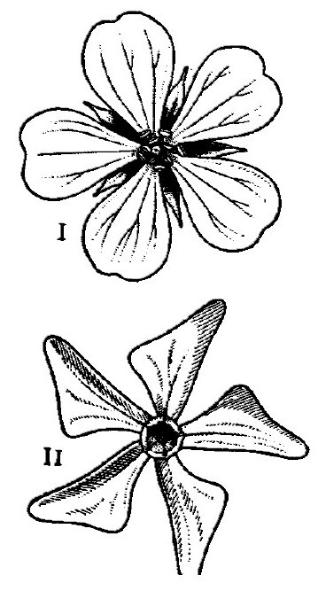
图39
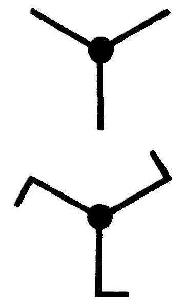
图40
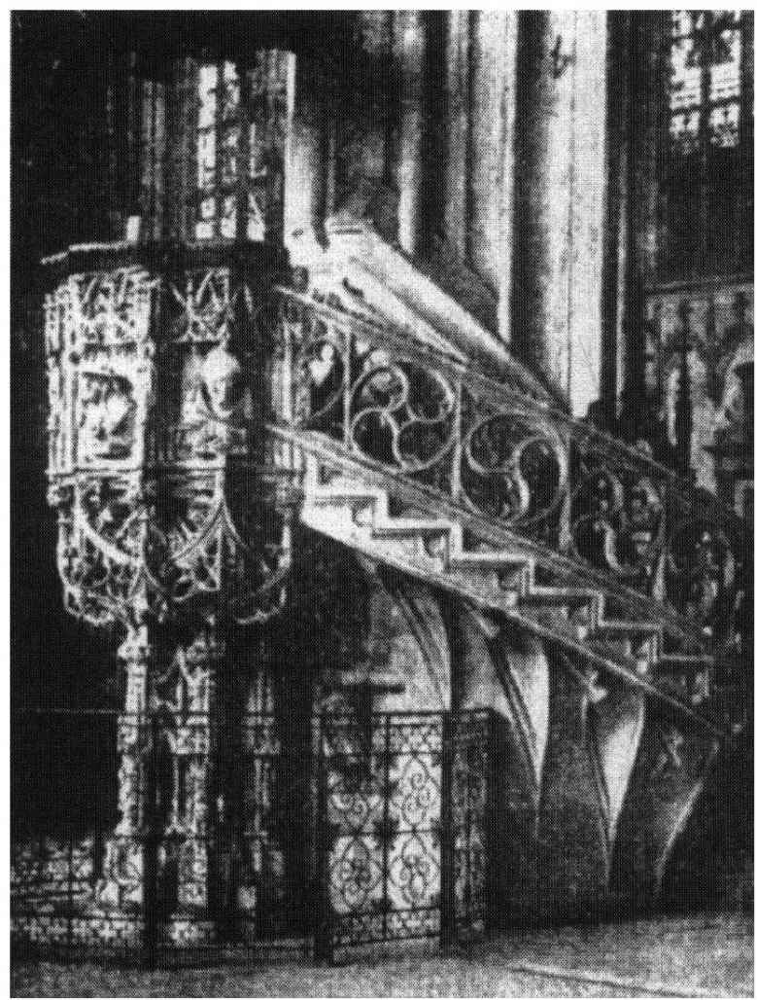
图41
关于二维旋转对称性就介绍这么多。如果讨论的是像带状饰物那样有可能趋于无限的图案，或者无限群，那么保持图案不变的操作就不一定是全等（congruence），也可以是相似（similarity）。一维条件下的相似，如果不是平移的话，会有一个固定点O，并相对于O点以某种比例a：1的伸缩s。其中a≠1，不必限制a＞0。这种操作的无限迭代构成了群Σ：
sn（n=0，±1，±2，……）
（2）
图42所示的佛塔锥螺（Turritella duplicata）的壳，是这种对称性一个很好的例子。每一节螺壳的宽度严格按照比例逐渐放大，精确度惊人。
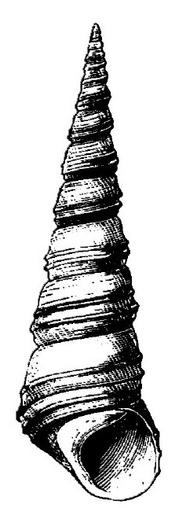
图42
有些时钟的指针作连续的匀速旋转，有些时钟的指针则一分钟一分钟地跳动。整数分钟的旋转构成了所有旋转的连续群中一个不连续的子群，而且自然可以认为旋转s及其迭代（2）包含在该连续群中。我们可以把这种观点应用于一维、二维或三维条件下的任何相似，事实上也可以应用于任何变换s。空间填充物质——“流体”——的连续运动在数学上可以通过变换U（t，t'）来描述，这里U（t，t'）将流体中任意一点在t时刻的位置Pt，变换至t'时刻的位置Pt'。如果U（t，t'）只依赖于时间差（t'-t），则U（t，t'）=S（t'-t），也就是说，相等的时间间隔内总是重复相同的运动，则变换就构成了单参数群。此时，流体作“匀速运动”。而简单的群法则
S（t1）S（t2）=S（t1+t2）
意味着，发生在两个相继时间间隔t1、t2的运动结果等于发生在时间间隔（t1+t2）的运动。1分钟运动的结果为确定的变换s=S（1），而对于所有的整数n来说，n分钟的运动S（n）就是迭代sn。因此，由s的迭代构成的非连续群Σ就包含在由运动S（t）构成的以t为参量的连续群之中。我们可以说连续运动是由发生在同样长度的无限小连续时间间隔的相同无限小运动的无穷多次重复构成的。
我们已经将上述考虑应用于伸缩和平面圆盘的旋转。现在来考虑任意真相似s，即并不涉及左右互换的相似。如果假定它不是纯粹的平移，那么它就涉及一个固定点O，且由绕O点的旋转和以O点为中心的伸缩构成。它可以由一个把匀速旋转和放大组合起来的连续过程S（t）来实现，比如1分钟后到达S（1）。这一过程将不同于O的点沿所谓的对数螺线（logarithmic spiral）或等角螺线（equiangular spiral）移动。因而，该曲线与直线和圆周一样具有如下重要性质：通过相似变换的连续群能回归自身。瑞士巴塞尔大教堂里詹姆斯·伯努利（James Bernoulli）的墓碑上刻着等角螺线（spira mirabilis），旁边的话“纵然变化，依然故我”（Eadem mutata resurgo）很文艺地说明了这一性质。直线和圆周是对数螺线的极限情况，分别对应于旋转加伸缩组合中前者或后者为恒等变换的情况。该过程在
t=n=……，-2，-1，0，1，2，……
（3）
时刻所达到的状态，构成了由迭代（2）组成的群。大家熟知的鹦鹉螺（Nautilus）的壳（图43）就具有这种对称性，且完美得惊人。图中不仅可以看到连续的对数螺线，还可看出壳室的潜无限序列具有非连续群（2）所描述的对称性。图44是大向日葵（Helianthus maximus）的照片，可以看出，其小筒花自然地按对数螺线排列，且两组对数螺线沿相反的方向盘绕。
三维空间中最普通的刚体运动是螺旋运动（screw motion）s，由绕某轴的旋转和沿该轴的平移复合而成。在相应的连续匀速运动的带动下，任何非轴上一点的运动轨迹都是一条螺旋线；当然，该螺旋线与对数螺线一样，同样有资格说自己“依然故我”（eadem resurgo）。运动的点在等时间间隔（3）所到达的位置序列Pn等距离地分布在螺线上，就像旋转楼梯上的台阶。如果操作s的旋转角度是圆周角360°的分数倍，且该分数可表达为μ/v，其中μ和v均为小整数，则序列Pn中相隔v的点就位于同一高度上，而螺旋转了μ周以后则会将Pn处的点移动至位于正上方的Pn+v处。树木嫩枝上生长的树叶常常呈这种规则的螺旋排列。歌德曾讲过自然界的螺旋倾向；且这种被称为叶序（phyllotaxis）的现象，自从查尔斯·邦内特（Charles Bonnet）时代（1754年）起就一直都是植物学家的主要研究方向。[19]人们发现，描述树叶的螺旋状排列的分数μ/v，通常是斐波那契数列
1/l，1/2，2/3，3/5，5/8，8/13，13/21，21/34，……
（4）
的成员，而斐波那契数列又来源于无理数（
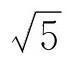
-1）/2的连分式展开。这个无理数就是黄金分割（aurea sectio）比率，在比例美的数学化方面发挥着重要作用。螺旋线所缠绕的圆柱面可换成圆锥面，这就相当于将螺旋运动s替换为任意的真相似——旋转与伸缩的复合。冷杉球果的木质鳞片的排列，就属于叶序中稍微更一般的这种对称性。从带叶植物的圆柱形茎、冷杉球果的木质鳞片和大向日葵筒花的花序很容易看出从圆柱面到圆锥面再到圆盘的过渡。冷杉球果上木质鳞片的排列是检验（4）式中数字的最佳对象，但其符合度并不太高，且大的偏差也不鲜见。泰特（P.G.Tait）曾在《爱丁堡皇家学会会刊》（Proceedings of the Royal Society of Edinburgh，1872）上给过一个简单的解释，而丘奇（A.H.Church）则在长篇巨著《叶序与力学定律的关系》（Relations of phyllotaxis to mechanical laws，Oxford，1901—1903）中介绍了隐藏在叶序算术里的一个生物体奥秘。我担心现代植物学家不像先辈们那样认真地对待叶序学说。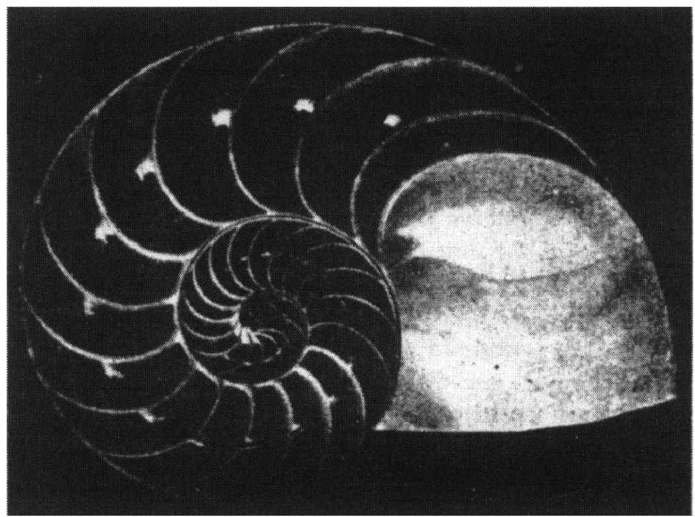
图43
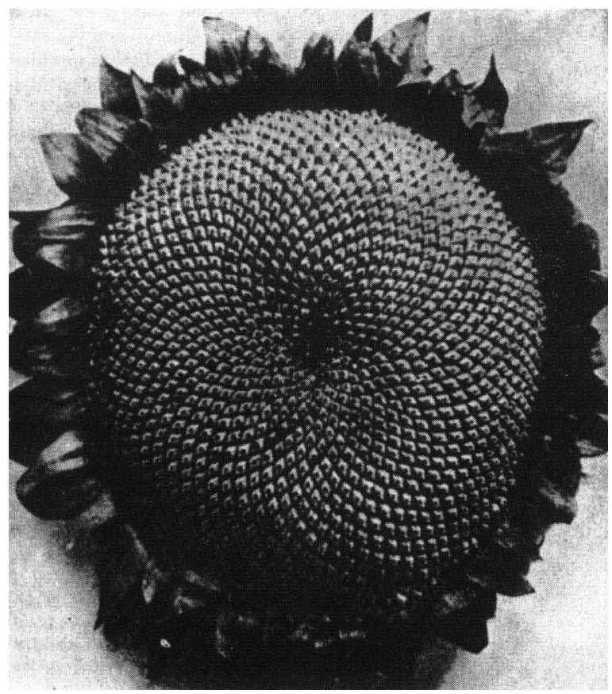
图44
截至目前，除反射外，我们考虑的所有对称性均可用一个由操作s的迭代构成的群来描述。把s取为转角为一周的整数分之一α=360º/n的旋转时得到的群是有限的，这无疑是最重要的一种情况。对于二维平面来说，除这些群之外不存在其他真旋转有限群；可参考莱昂纳多的表（1）中的第一行C1，C2，C3，……。具有相应对称性的最简单图形是正多边形：正三角形、正方形、正五边形……。对于每个n=3，4，5，……都对应存在一个正n边形，这与平面几何中对于每个n都存在一个阶数为n的旋转群这一事实密切相关。这两方面都很重要。而对于三维空间来说情况就大不相同：三维空间里不存在无限多的正多面体，事实上只有五个正多面体，通常被称为柏拉图多面体（Platonic solids），因为它们在柏拉图的自然哲学中起着重要作用。它们分别是正四面体、正方体、正八面体、表面为12个正五边形的五角十二面体，以及由20个正三角形围成的正二十面体。有人可能会说前三个很稀松平常，但后面两个确实是数学史上最漂亮最奇妙的发现之一。可以相当肯定地说，后两者的发现可追溯至南意大利的古希腊殖民者，据说他们受西西里岛盛产的含硫矿石——黄铁矿晶体的启发，有了正十二面体的概念。但是，如前所述，正十二面体所特有的正五边形对称与晶体学的定律相矛盾；事实上，由黄铁矿结晶出的十二面体的五边形表面只有四条边长度相等。可能是西厄蒂特斯（Theaetetus）第一次精确构造出了正五边形十二面体。有证据表明，很久以前在古意大利就有人用正十二面体做骰子，且正十二面体在伊特鲁里亚文化中还有着某种宗教意义。柏拉图在对话录《蒂迈欧篇》（Timaeus）中，把正四面体、正八面体、立方体和正十二面体分别与火、气、土和水这四种元素按次序联系了起来。从某种意义上来讲，他在正五边形十二面体中看到了整个宇宙的影像。施派泽提倡过下述观点：构造这五个正多面体，是由古希腊人创立并由欧几里得在《几何原本》中奉为圣典的几何学演绎体系的主要目标。不过，这里我要提醒一下，古希腊人从未用过我们现代意义上的“对称”一词。σύμμετρoς通常是成比例的意思，而在欧几里得几何中它却相当于现在的“可公度的”（commensurable）：正方形的边和对角线是不可公度的量，用古希腊语来表示即ἀσύμμετρα μεγϑη。
图45引自海克尔的《挑战者号专著》，展示的是几种放射虫的外骨骼。图中的2、3、5分别为八面体、二十面体和十二面体，其形式之规则着实令人惊讶；图中的4似乎只具有较低的对称性。
开普勒（Kepler）在1595年出版的《宇宙的奥秘》（Mysterium cosmographicum）一书中试图把行星系中的距离与交替内接或外切于球面的一组正多面体关联起来，此时距离他发现以自己名字命名的三大定律还有很长一段时间。图46就是他的构想，由此他相信自己已经深入洞察了造物主的奥秘。图中的六个球面对应于六大行星：土星、木星、火星、地球、金星和水星，依次由立方体、正四面体、正十二面体、正八面体和正二十面体隔开。（当然，开普勒还不知道天王星、海王星和冥王星这三颗外层行星，它们分别发现于1781年、1846年和1930年。）他试图找出造物主选择这种次序的柏拉图多面体的原因，并对行星的性质（是占星术上的性质，而不是天体物理的性质）与相应正多面体的性质进行比较。他用一首气势磅礴的赞美诗作为该书的结尾，诗中宣告了他的信条：“我坚信球形的神力（Credo spatioso numen in orbe）。”我们至今仍受他的宇宙数学和谐论的影响。这一信念经受住了更广阔的检验。只不过，我们是在动态规律，而不是像正多面体这样的静态形式中寻求和谐。
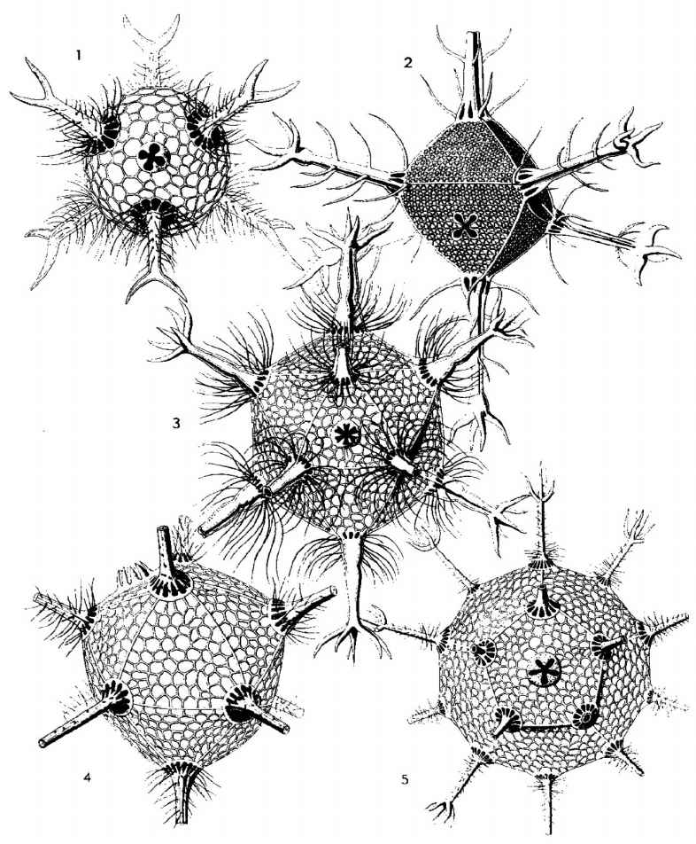
图45
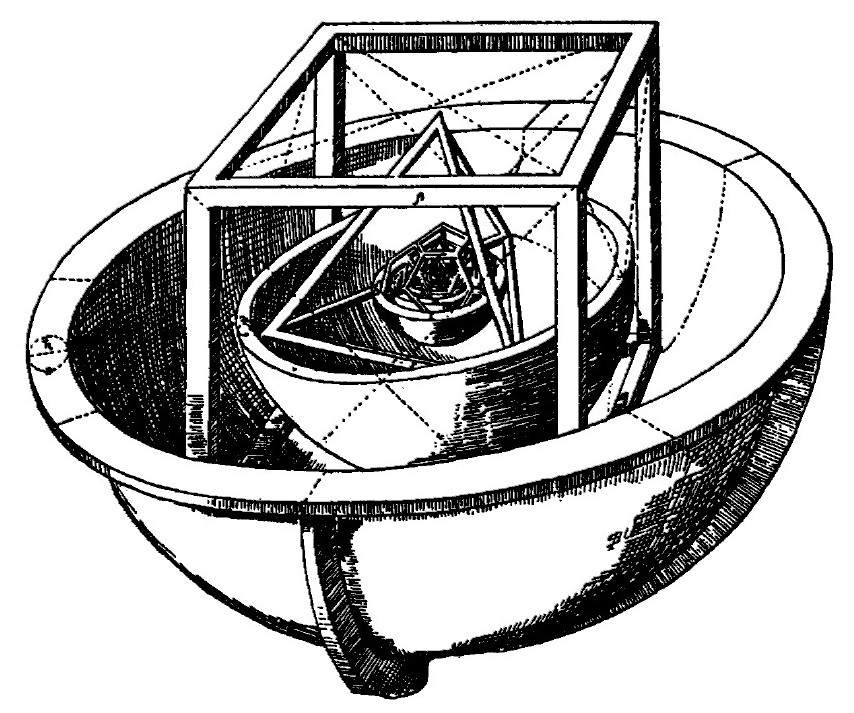
图46
正如正多边形与平面旋转有限群相关，正多面体也必然与由空间中绕中心O的真旋转构成的有限群密切相关。从对平面旋转的研究，我们立即就能得到空间中的两类真旋转群。事实上，由平面上绕中心O的真旋转构成的群Cn，也可以看作由空间中绕过中心O的垂直轴的旋转构成。平面上相对于直线l的反射可由空间中绕l的180°翻转（折叠）来实现。你们或许还记得，前面分析一幅苏美尔人的图案（图4）时已经提到过这一点。这样平面上的群Dn就变成了空间中的真旋转群D'n。该群包含绕过O点的垂直轴转动360°/n的整数倍的旋转和绕过O点的n条相互夹角为360°/2n的水平轴的翻转。不过应该注意到的是，群D'1和群C2均由恒等变换和绕一条线的翻转构成。因此这两个群是相同的，在三维空间真旋转构成的不同群的完整列表中，保留C2的话就应该剔除D'1。于是我们就有列表
C1，C2，C3，C4，……；
D'2，D'3，D'4，……
D'2为所谓的四元群（four-group），由恒等变换和绕三条相互垂直的轴的翻转构成。
这五个正多面体中的每一个都能够构造出由该立体变换成自身的真旋转所构成的群。这样会产生五个新的群吗？不，只产生三个。原因如下。作一个球面内切于立方体，并作一个八面体内接于此球面，使得八面体的顶点落在球面与立方体表面的切点上，亦即落在六个正方形表面的中心（图47为二维情形下的示意图）。在这种情况下，立方体和八面体就形成了投影几何学意义上的配极图形（polar figure）。显然，该八面体在任何使得该立方体变换为自身的旋转变换下均保持不变，反之亦然。因此，八面体的群与立方体的群相同。同样，正五边形十二面体与二十面体也是配极图形。正四面体的配极图形仍是正四面体，后一个正四面体的顶点是前一个正四面体顶点的对映点（antipode）。这样一来，我们就找出了由真旋转构成的三个新的群：T、W和P；它们分别使得正四面体、立方体和正八面体、正五边形十二面体和正二十面体保持不变。它们的阶数，亦即所包含的操作的个数，分别为12、24、60。
通过一个比较简单的分析（附录A）就能证明，加上这三个群后，我们的列表（5）就完整了：
Cn（n=1，2，3，……）
D'n（n=2，3，4，……）
T，W，P.
（5）
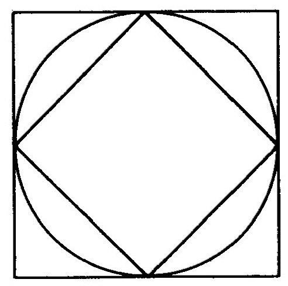
图47
这是现代的表达法，相当于古希腊人列出的正多面体表。这些群，特别是最后的三个群，对于几何学研究来说是个具有巨大吸引力的课题。
如果允许群里包含非真旋转又将如何呢？借助一个非常独特的非真旋转，即相对于点O的反射，可以给出最好的回答。该非真旋转将任意一点P变换为关于点O的对映点P'，即将线段PO向前延长原来的长度所得到的点。记这一操作为Ȥ，它与所有旋转S都满足交换律，即ȤS=SȤ。现设Γ为由真旋转构成的有限群。一种引入非真旋转的方式是简单地附加上Ȥ，更准确地说是在真旋转S的基础上再给Γ添加上所有形如ȤS（S为Γ的元素）的非真旋转。得到的群
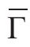
（=Γ+ȤΓ）的阶数显然是Γ的2倍。引入非真旋转的另一种方式如下：假设Γ是真旋转群Γ'的一个指数为2的子群；这样，Γ'中一半的元素属于Γ，称之为S；另一半元素不属于Γ称之为S'。现在用非真旋转ȤS'代替S'。这样我们就得到一个包含有Γ的群ΓΓ，但它另一半的操作则是非真的。比如，Γ=Cn是Γ'=D'n的一个指数为2的子群。D'n中不属于Cn的操作S'是绕n条水平轴的翻转；相应的ȤS'是相对于垂直于这些轴的平面的反射。所以，D'nCn就由绕垂直轴的转角为360°/n的整数倍的旋转和相对于过该轴且相互夹角为360°/2n的垂直平面的反射构成。你也可以说它就是前面用Dn表示的那个群。再举一个最简单的例子：Γ=C1是Γ'=C2的子集，C2的一个不属于C1的操作S'是绕垂直轴的180°旋转；ȤS'是相对于过O点的水平面的反射。因此C2C1是由恒等变换和相对于一给定平面的反射构成的群；换言之，它就是描述左右对称性的那个群。前面所述是仅有的两种把非真旋转引入群中来的方式（其证明可参见附录B）。所以，下面就是所有由真和非真旋转构成的有限群的完整列表：
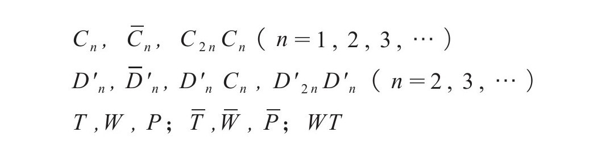
之所以存在最后一个群WT，是因为四面体群T是八面体群W的指数为2的子群。
在最后一讲讨论晶体的对称性时，这张表将发挥重要作用。